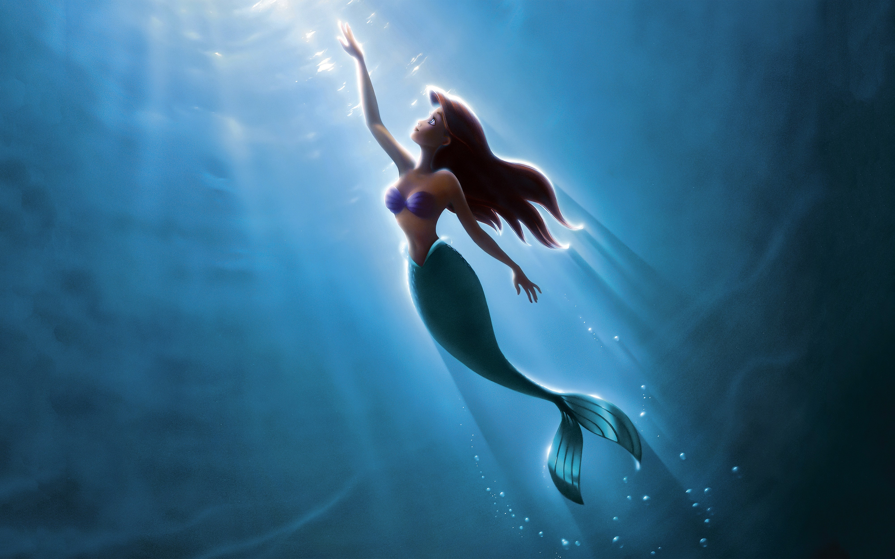

About Ariel
Ariel is the youngest of King Triton and Queen Athena's seven daughter. She is often seen in the company of Flounder, her best friend, and Sebastian, her father's advisor who is often assigned to keep an eye on her. Ariel is adventurous, often wandering off on her own to explore her surroundings. She dreams to have a human life and gave up her voice to be with Prince Eric. But this incredibly curious nature of hers led her into dangerous situations.
Ariel and her Friends
Ariel's Characteristics
- She's got a curious mind
- She has a beautiful voice
- She's head over heels for Prince Eric
Ariel's Friends
Flounder is Ariel's best friend, though he is not as brave as her. Click on the links below to read more about them